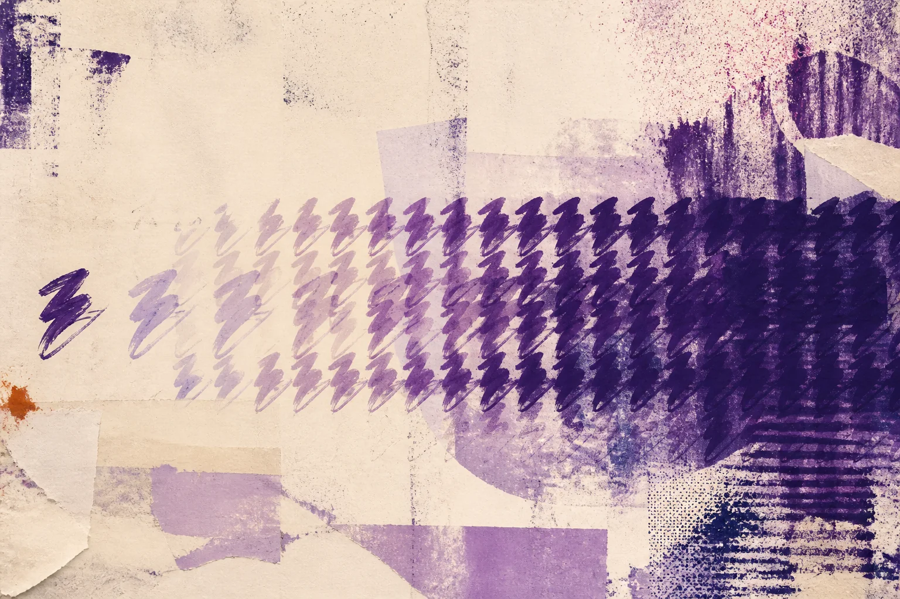
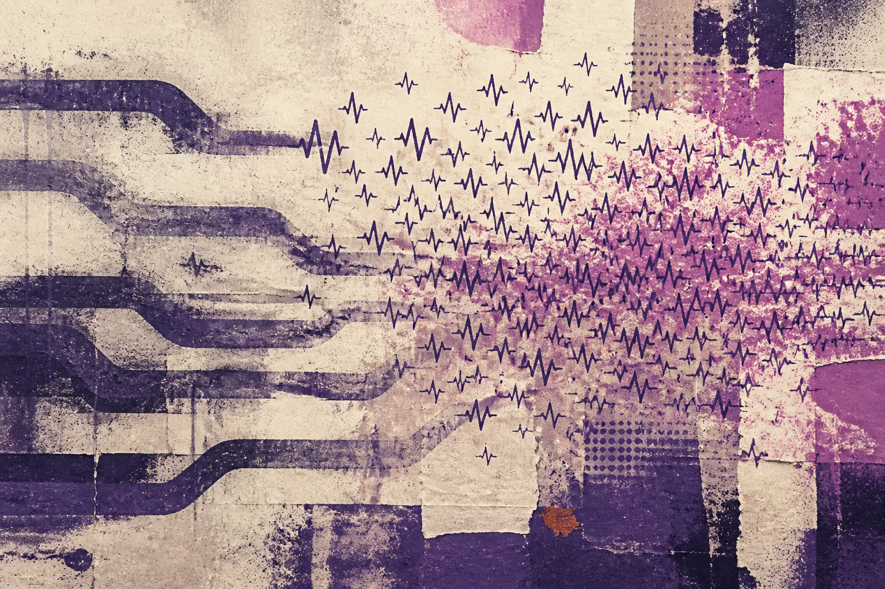
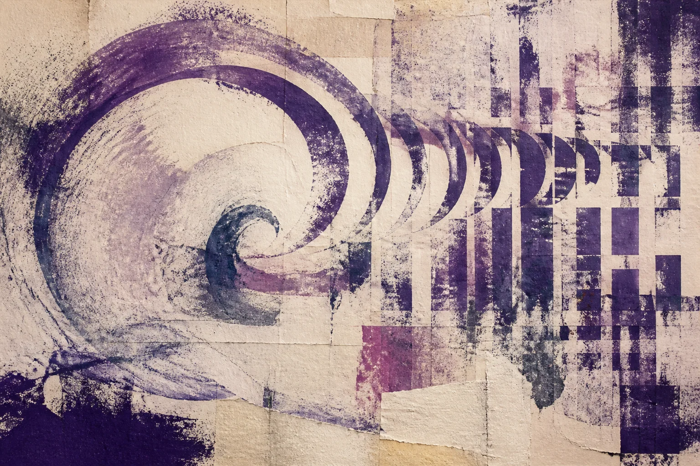
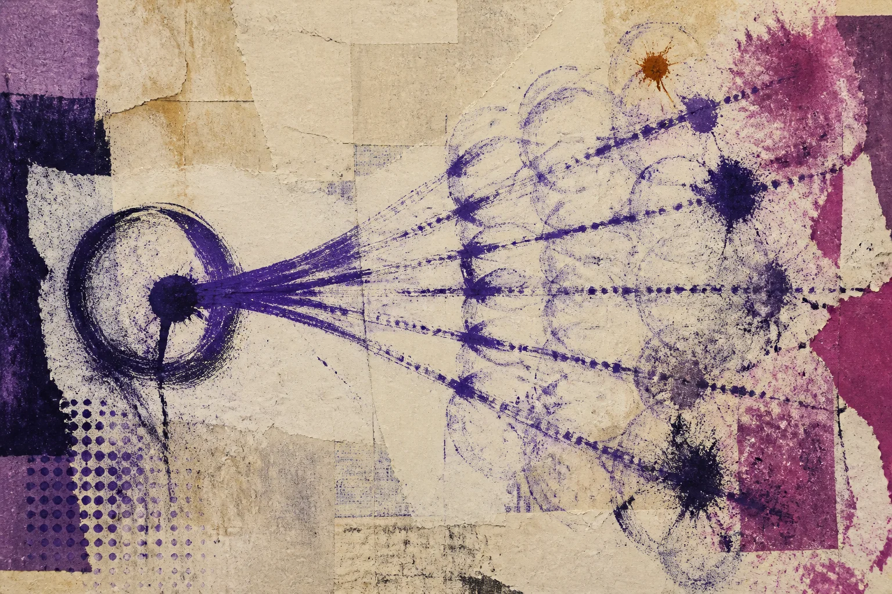
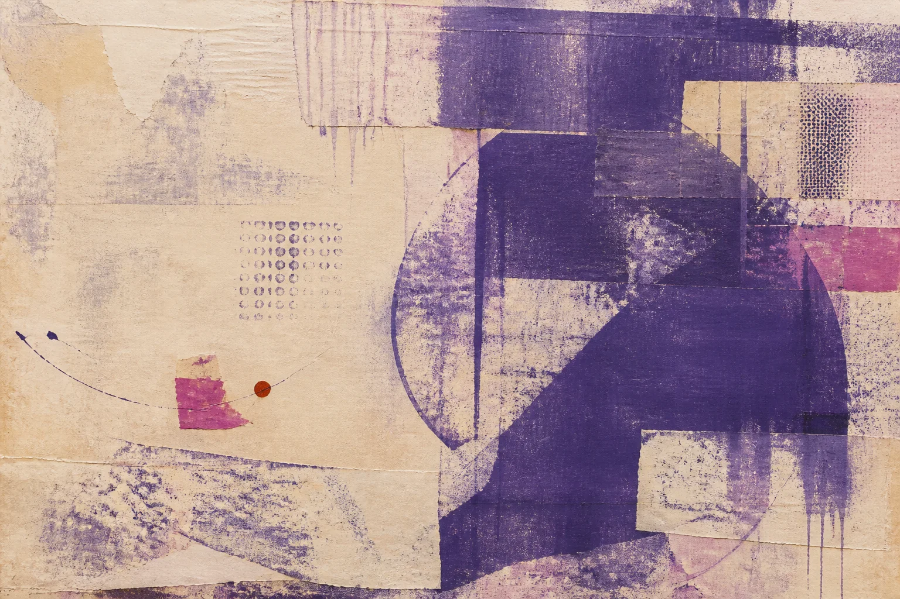
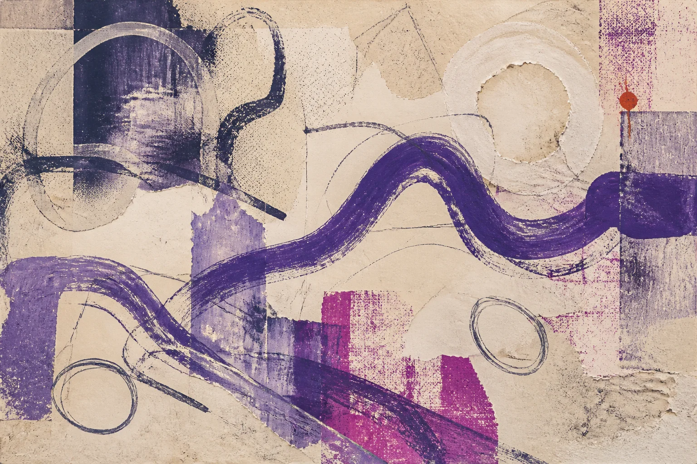

FORM 2F · COPY 4/4
Свобода второго порядка
Этическая проверка личного выбора через норму, инфраструктуру и цену отказа, возникающие после его массового повторения.
Будущее часто собирают люди, которые хотят удобства, доступности, признания труда, безопасности и связи через расстояние, отвечая своими решениями на реальные потребности. Один человек монетизирует любимое занятие, другой показывает хорошего художника большей аудитории, третий переносит услугу в приложение, четвёртый вводит метрику ради прозрачности, и каждое действие можно разумно защитить в границах одной ситуации.
Повторение меняет границы ситуации: почти бесплатное сообщение придаёт долгому молчанию новый социальный вес, массовый переход к услуге через приложение позволяет организации сократить живой канал до дорогого излишества, а регулярные видеозаписи участников группы заставляют отсутствие видеозаписи означать отсутствие занятия, поскольку удешевление действия создаёт ожидание, которое со временем закрывает альтернативы.
Свобода первого порядка спрашивает, могу ли я сделать выбранное, а свобода второго порядка переносит взгляд на мир, который становится нормальным, когда достаточно людей делают то же самое и учреждения перестраиваются вокруг их выбора; в поле зрения появляется человек, который позже захочет отказаться.
У выражения есть несколько родословных. Гарри Франкфурт различал желания первого порядка и желания о собственных желаниях, включая волю второго порядка (Франкфурт, 1971); в политической экономии выбор второго порядка описывали как выбор об условиях дальнейшего выбора (Каммак, 2014). Эта статья развивает вторую линию: предметом свободы становится общая среда, которую нынешние решения оставляют следующему участнику. Индивидуальная настройка внимания уже происходит внутри чужого порядка сигналов, где человек выбирает, на что смотреть, пока среда заранее задала режим, в котором этот выбор совершается. Исследования рекомендательных систем приходят к близкому различию, когда рассматривают предпочтения о собственных предпочтениях, включая показ и изменение, как условие уважения автономии (Аштон и Франклин, 2022); наблюдаемый отклик может сосуществовать с отказом от среды, которая продолжает производить стимул.
От выбора к умолчанию

Личная монетизация хобби может дать доход, признание и возможность уделять практике больше времени, однако её превращение в признак серьёзности меняет саму категорию любительства: бесплатное начинает выглядеть недооценённым, невидимое несуществующим, любительское незрелым, а отсутствие роста неудачным, и защитники достоинства творческого труда способны нечаянно сузить область, где труд был неподходящей категорией.
Публикация проходит похожий путь: одна видеозапись помогает найти друзей, получить обратную связь и сохранить движение, серия открывает карьеру, а превращение записи в удостоверение участия заставляет человека без записи объяснять свою принадлежность. «Кризис хобби» рассматривает эту перемену внутри добровольного сообщества, тогда как здесь важен механизм агрегации, превративший частный путь в социальное умолчание после множества обычных выборов.
Цифровой сервис часто начинается с удобного дополнительного канала, после чего организация замечает выбор большинства, сокращает поддержку остальных маршрутов и объявляет приложение единственным эффективным решением, а обязательный смартфон возникает из последовательности оптимизаций, каждая из которых опирается на уже изменившееся поведение.
Эмерджентная норма возникает без единственного автора и законченной доктрины через повторение предположений, которые выглядят очевидными: ценное следует сделать видимым, регулярное можно измерить, доступное для оцифровки стоит оцифровать, растущая аудитория лучше устойчивой малой группы, и в переставших нуждаться в обсуждении преобразованиях уже действует общая философия.
Цена дешёвого сигнала

Письмо требовало бумаги, адреса, дороги и дней ожидания, поэтому молчание сохраняло множество обычных объяснений. Почти бесплатное мгновенное сообщение принесло важную свободу поддерживать отношения через расстояние, а вместе с массовым распространением изменило интерпретацию паузы: человек предположительно видел уведомление, технически мог ответить и теперь должен объяснить задержку, поскольку материальная стоимость сигнала приблизилась к нулю, пока социальная стоимость его отсутствия выросла. Джордж Вудкок уже видел этот ход на фабричных часах, где время стало товаром, «пустая трата времени» превратилась в грех, а человек — в наблюдателя за стрелками (Вудкок, 1944). Почти бесплатное сообщение повторяет тот же циферблат в другом материале.
Тот же переход происходит с публикацией любительской работы, поскольку камера и канал дают доступ к обучению, архиву и людям, которых невозможно встретить локально, а регулярность постепенно становится фоном, на котором отдельное молчание приобретает значение. Удешевление передачи не оставляет прежнюю культуру неизменной, потому что возможность, которой пользуются многие, превращается в ожидание и перераспределяет обязанность объясняться.
Сетевой эффект усиливает этот процесс: ценность канала растёт вместе с числом уже находящихся в нём людей, поэтому каждый новый участник делает личный выбор всё разумнее и одновременно повышает цену другого маршрута для следующего человека. Альтернатива может технически существовать, но пустой чат, редкая касса или форум без ответов перестают выполнять социальную функцию. После переноса отношений организация сокращает бюджет резервного пути, сотрудники теряют навык его обслуживания, данные накапливаются в новом формате, и обратное решение становится дороже из-за зависимости от пройденного пути (Артур, 1989).
Множество локально защитимых выборов создаёт результат, которого никто отдельно не заказывал: участник выбирал удобный канал для себя, руководитель сокращал дублирование, разработчик улучшал распространённый сценарий, а совместное действие произвело обязательную инфраструктуру. Свобода второго порядка нужна именно для этого расстояния между намерением одного решения и условиями, появляющимися после их агрегации. Летом 1936 года рабочие городского транспорта Барселоны, большинство из которых состояло в CNT, объединили трамвай, метро, автобус и такси, назначили на каждый участок инженера от союза и обновили сеть (Souchy, 1974). Механизм стал работать слаженнее. Вопрос о том, кто задаёт образ будущего этой инфраструктуры — инженеры, рабочие советы или пассажиры — остался открытым. Локально защитимое улучшение механизма оставляет следующего человека у края, если приоритеты по-прежнему производит узкий круг знания. Та же агрегация способна принуждать к оплате без спроса: когда один технический порядок монополизирует канал, его содержание социализируется через тарифы и налоги, которые платят люди, искавшие лишь более узкую функцию, как когда телефонный счёт финансирует интернет-инфраструктуру, которую абонент не просил покупать.
Хорошее намерение и форма

В «Людях с приколом» форма рождается из заботы, а затем начинает превосходить человека, показывая важную предысторию свободы второго порядка: давление умеет наследовать язык пользы, справедливости и качества. Создатель рейтинга хочет прозрачного отбора, организатор фестиваля хочет показать сильные работы, участник ведёт архив, чтобы память не исчезла, а форма получает моральный кредит от исходного намерения и продолжает тратить его после изменения условий.
Рабочая среда даёт тот же рисунок, когда полезная для координации видимость задач постепенно превращает след в заменитель присутствия и вклада. Past Year Review 24/25 уже описывает, как система подкрепляет демонстративную занятость и заставляет выполнять работу для поверхности наблюдения; свобода второго порядка добавляет вопрос о поведении, которое получит преимущество после нескольких лет обучения участников у такой системы.
Датская цифровизация государства благосостояния уже разобрана в «Антидигитизме» через этнографию Каррерас. Удобство одного пользователя и экономия учреждения складывались в среду, где чужой неоплачиваемый труд поддерживал обещанную эффективность. Здесь важен механизм второго порядка: добрые намерения и локальная экономия оставляют следующему человеку более дорогой отказ.
Моральная оценка охватывает добрые намерения, немедленную выгоду и дальнейший путь формы, которая масштабируется, закрепляется в бюджете, становится привычкой, вытесняет резервный канал и однажды встречает человека за пределами исходного замысла.
Проверка повторением

Перед тем как объявить предпочтение прогрессом, проверка повторением прослеживает будущие условия принадлежности, изменение стоимости отказа, исчезновение неиспользуемых навыков, каналов и пространств, распределение доступных исключений и сохранность обратного пути после вложений в новый стандарт.
Проверка переносит часть бремени с личного выбора на среду вокруг него: карьерный путь из хобби оставляет сообществу ответственность за место для других форм участия, обязательная запись каждой встречи заставляет людей без медиаследа отдельно доказывать свою принадлежность, а развитие приложения сохраняет полноценный путь к услуге через другой канал, который «Антидигитизм» связывает с осмысленным отказом.
«Кризис хобби» уже показывает на материале сообщества YouTube о косметике, как предпринимательские практики отдельных участников меняют нормы для остальных (Мардон, Кокер и Даунт, 2023); здесь достаточно механизма: норма растёт через взаимное наблюдение и адаптацию среды задолго до формального требования.
Второй порядок показывает распределение выгод и потерь: человек, получивший доход от новой нормы, и человек, потерявший право оставаться любителем, находятся в разных местах одной системы. Так же различаются позиции пользователя, сэкономившего минуту благодаря приложению, и человека без совместимого устройства; среднее удобство скрывает край системы, где отказ становится дорогим.
Возражение личной свободой

У проверки повторением есть очевидное возражение: человек, который публикует видео, открывает магазин или выбирает удобное приложение, не может отвечать за все возможные последствия массового повторения своего решения. Требование заранее универсализировать каждое действие сделало бы обычную жизнь неподвижной и особенно тяжело легло бы на людей с малым влиянием, пока учреждения продолжали бы определять умолчания через бюджеты, протоколы и условия доступа.
Ответственность второго порядка распределяется по способности менять общую среду: отдельный участник прежде всего может замечать давление и не превращать собственный путь в меру чужой серьёзности; организатор управляет правилами допуска и обязан оставить место разным формам участия; платформа определяет интерфейс, переносимость и видимость; государство и крупная организация располагают ресурсами, чтобы сохранять эквивалентный доступ. Чем больше власть над умолчанием, тем сильнее обязанность исследовать край системы и финансировать свободу отказа. Государство, которое считает телекоммуникации критической инфраструктурой, может финансировать доступ как гражданскую возможность и оставлять неиспользуемые слои пакета необязательными, тогда как коммерческое умолчание, связывающее несколько функций в один оплачиваемый объект, переносит цену одной монопольной схемы на людей, которым был нужен только звонок.
Проверка повторением служит способом увидеть последствия и выбрать уровень вмешательства, сохраняя пространство для личного эксперимента, эксцентричного проекта и рискованной новой формы. Один человек может полностью перенести свою жизнь в новый канал, а коллективная ответственность возникает там, где его предпочтение превращают в правило для остальных. Такой порог связывает этику с устройством власти и не требует одинаковой осторожности от пользователя и учреждения.
Объектом сохранения становится значимая возможность, особенно доступ к необходимой услуге, сообществу, труду и обжалованию решения. Конкретная бумажная форма, аппарат или устаревшая процедура могут выйти из употребления, если их функцию принимает действительно доступный маршрут с другим владельцем, человеческим рассмотрением и приемлемой стоимостью, включая цифровой режим, который выполняет задачу без непрерывного поведенческого журналирования. Избыточность означает несколько независимых способов осуществить право и позволяет инфраструктуре меняться, не превращая техническую модернизацию в социальное закрытие двери.
Свобода с запасом

Свободная среда хранит больше возможностей, чем большинство использует сегодня: в ней остаются неэффективный живой канал, площадка без обязательной съёмки, практика без карьерной лестницы, пауза без объяснения и место для возвращения в изменившейся роли, образуя избыточный с точки зрения текущей метрики запас для будущего выбора.
Такая свобода требует коллективного самоограничения, при котором использование доступной возможности оставляет пространство вокруг неё, успех одного маршрута сохраняет остальные, массовое предпочтение учитывает меньшинство, а удобство настоящего оставляет автономию будущему.
В традициях префигуративной политики желаемые отношения создаются уже в способе текущего действия (Тёрнберг, 2021): горизонтальная организация начинается с распределения голоса внутри сегодняшней группы, а свободная инфраструктура начинается с маршрута для несогласного участника до того, как отказ стал массовым. Резервный канал, переносимый архив и право прийти без профиля выглядят как лишние расходы в пределах текущего спроса, но именно они материализуют будущую возможность выбирать.
Межпоколенческий смысл этого запаса состоит в том, что будущий участник ещё не мог согласиться с сегодняшним умолчанием. Бюджет, формат архива и закрытая дверь переживают первоначальных авторов решения, поэтому сохранённая альтернатива позволяет следующему человеку пересмотреть их выбор на практике даже после того, как сложившийся порядок стало трудно обратить.
Запас свободы проявляется также в навыках и людях, которых система не использует каждую минуту. Сотрудник, способный рассмотреть исключение, локальная копия, физическое место встречи и привычка писать человеку напрямую удерживают возможность действия при сбое, конфликте или смене владельца. Такая избыточность повышает устойчивость и одновременно ограничивает власть основного посредника, поскольку его отказ больше не равен остановке всей общей жизни.
Регулярная проверка резервного пути сохраняет его действующим: редкое обращение нужно провести до конца, локальную копию восстановить, номер телефона проверить, а исключение разобрать вместе с человеком, который действительно отвечает за решение.
Четыре статьи серии сходятся в среде, где хобби сохраняет право на экономическую бесполезность, цифровой посредник остаётся инструментом при сохранённом выходе с сопоставимым удобством, а человек продолжается через паузу и получает право завершить линию; сама среда выдерживает различие и освобождает участие от единой убедительной биографии.
Свобода первого порядка открывает дверь передо мной, а свобода второго порядка оставляет другую дверь для человека, который придёт позже.
Источники
- Rebecca Mardon, Hayley Cocker, Kate Daunt. “How Social Media Influencers Impact Consumer Collectives: An Embeddedness Perspective.” Journal of Consumer Research 50(3), 2023. https://doi.org/10.1093/jcr/ucad003
- W. Brian Arthur. “Competing Technologies, Increasing Returns, and Lock-In by Historical Events.” The Economic Journal 99(394), 1989. https://doi.org/10.2307/2234208
- Harry G. Frankfurt. “Freedom of the Will and the Concept of a Person.” The Journal of Philosophy 68(1), 1971, 5–20. https://doi.org/10.2307/2024717
- Hal Ashton, Matija Franklin. “Solutions to preference manipulation in recommender systems require knowledge of meta-preferences.” arXiv:2209.11801, 2022. https://arxiv.org/abs/2209.11801
- Daniela Cammack. Marx, Hayek and the Relationship between Capitalism and Freedom. 2014. https://scholar.harvard.edu/files/dlcammack/files/marx_hayek_and_the_relationship_between_capitalism_and_freedom.pdf
- Barbara N. Carreras. Frictional Infrastructures: An Ethnography of Compulsory Digital Self-Reliance and Collective Access in the Danish Welfare State. IT University of Copenhagen, 2024. https://pure.itu.dk/en/publications/frictional-infrastructures-an-ethnography-of-compulsory-digital-s/
- Anton Törnberg. “Prefigurative Politics and Social Change: A Typology Drawing on Transition Studies.” Distinktion 22(1), 2021, 83–107. https://doi.org/10.1080/1600910X.2020.1856161
- George Woodcock. “The Tyranny of the Clock.” War Commentary — For Anarchism, March 1944. https://theanarchistlibrary.org/library/george-woodcock-the-tyranny-of-the-clock
- Augustin Souchy. “Workers’ Self-Management in Industry.” In Sam Dolgoff, ed. The Anarchist Collectives: Workers’ Self-Management in the Spanish Revolution, 1936–1939. 1974. https://theanarchistlibrary.org/library/sam-dolgoff-editor-the-anarchist-collectives